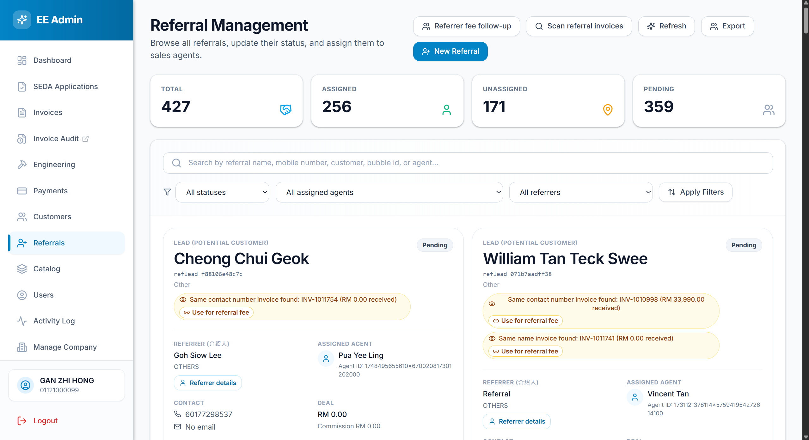
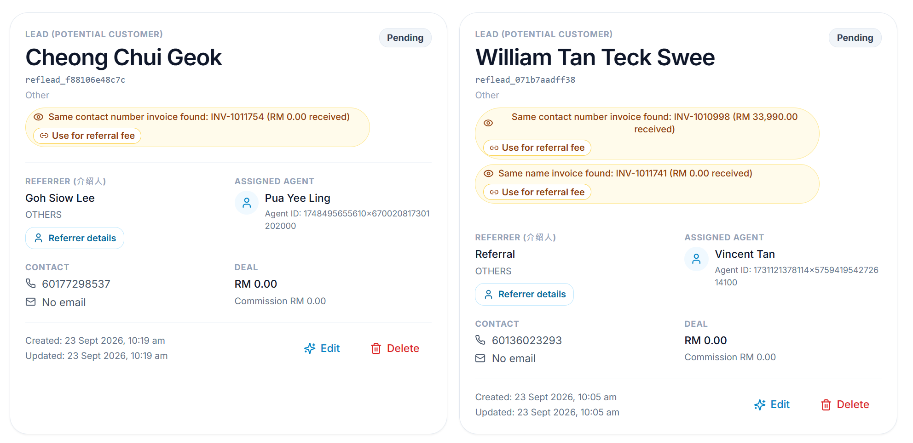
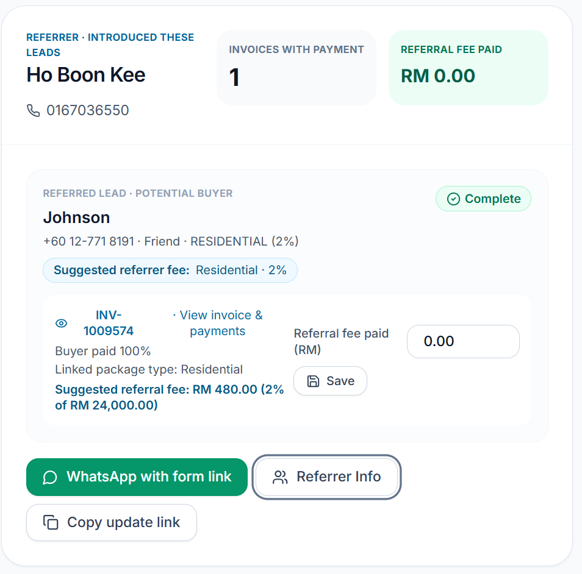

User guide · based on your screenshots
Referral Management
A visual guide to the referral cards, invoice scan, referral-fee follow-up, and referrer information link.

Swipe left/right or use the controls to move through the guide.
01 · Referral Management page
How to read a lead card
The large name at the top belongs to the lead / potential buyer. The referrer is identified separately below as REFERRER (介绍人).

- Lead (potential customer) and status: the buyer and current sales status.
- Referrer (介绍人): the person who introduced this lead.
- Assigned agent: the salesperson responsible for follow-up.
- Contact and Deal: buyer contact details, deal value, and commission shown on the referral record.
02 · Scan referral invoices
One scan checks all leads
At the top of the Referral Management page, tap Scan referral invoices. Matching invoice results appear on the related lead cards.
- The card shows the invoice number and amount received, such as “RM 33,990.00 received.”
- Tap the invoice result / eye icon to open the invoice quick view and inspect the payment record.
- A matching name or contact is a clue; check that the invoice belongs to the referred buyer.
03 · Link the verified invoice
“Use for referral fee”
This admin-only action links a selected possible-match invoice to the referral lead for referral-fee tracking.
- First open the invoice and verify the buyer and payment details.
- Tap Use for referral fee. A confirmation explains if another referral attribution will be replaced or this lead’s current invoice link will move.
- Confirm only when the invoice is for this referred buyer. The billed customer on the invoice stays unchanged.
- The invoice appears in fee follow-up after a customer payment has been recorded.
04 · Referrer fee follow-up page
One summary card per referrer
Tap Referrer fee follow-up from Referral Management. This page groups the referred leads and invoices under the person who introduced them.

- Invoices with payment counts linked invoices with any customer payment recorded (>0%).
- Referral fee paid totals the per-invoice amounts saved as paid.
- Missing lead details means a lead is missing name, contact number, relationship, or project type.
- Lead details complete confirms those lead fields are present; it does not confirm bank or TIN details are complete.
05 · Suggested versus paid
The suggested RM amount is calculated
The lead’s project type determines the suggested rate. The app applies that rate to the linked invoice total and shows the calculated RM amount on the invoice row.
- Linked package type shows the invoice package category, such as Residential or Commercial.
- View invoice & payments opens a quick view for the invoice and its payment record.
- Referral fee paid (RM) is the actual cumulative amount paid so far. Enter it and tap Save.
06 · Request referrer details
WhatsApp and Referrer Info
- WhatsApp with form link opens a prepared WhatsApp message containing the update link. Check the recipient, then send it.
- Referrer Info opens the update form. On a lead card, it opens the referrer panel first; use its form link from there.
- Copy update link copies the link so you can send it another way.
The submitted form updates the linked referrer profile and referral lead records.